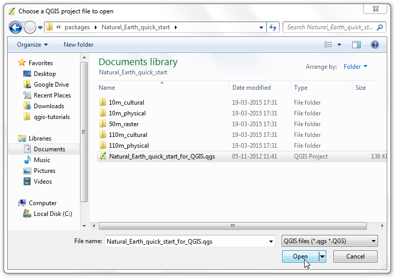
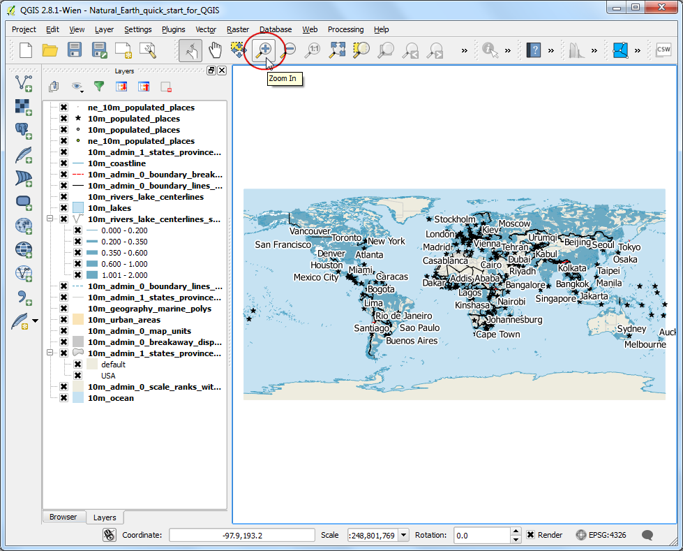
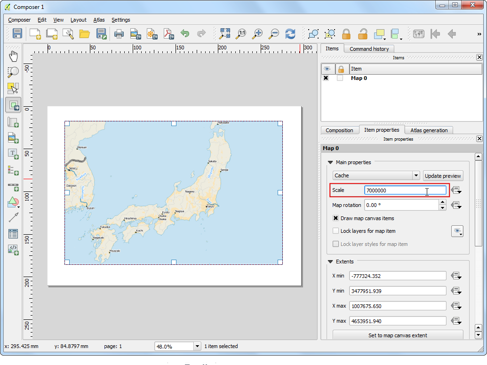
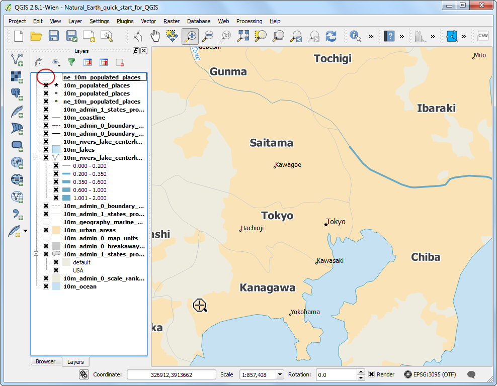
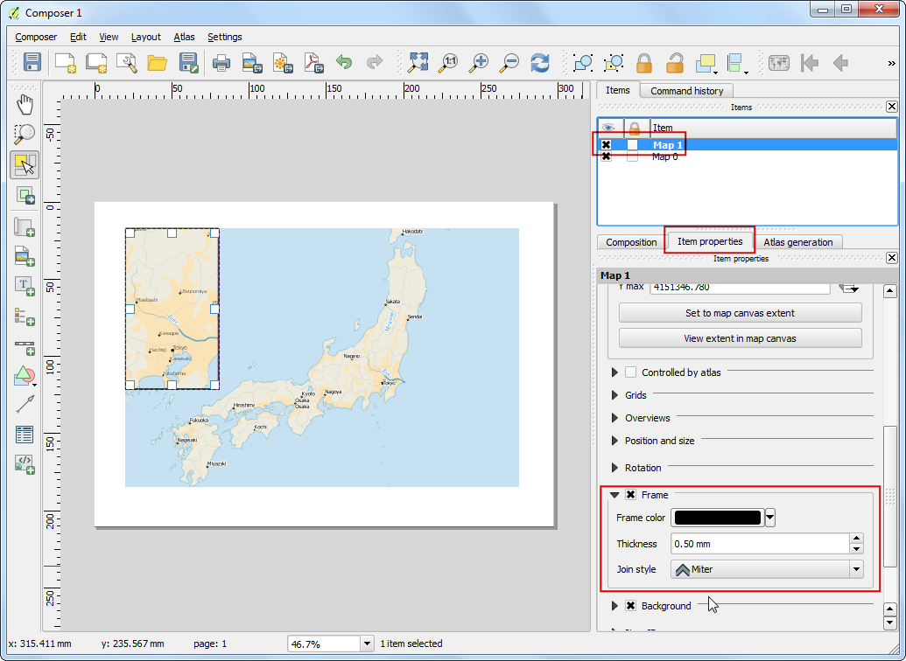
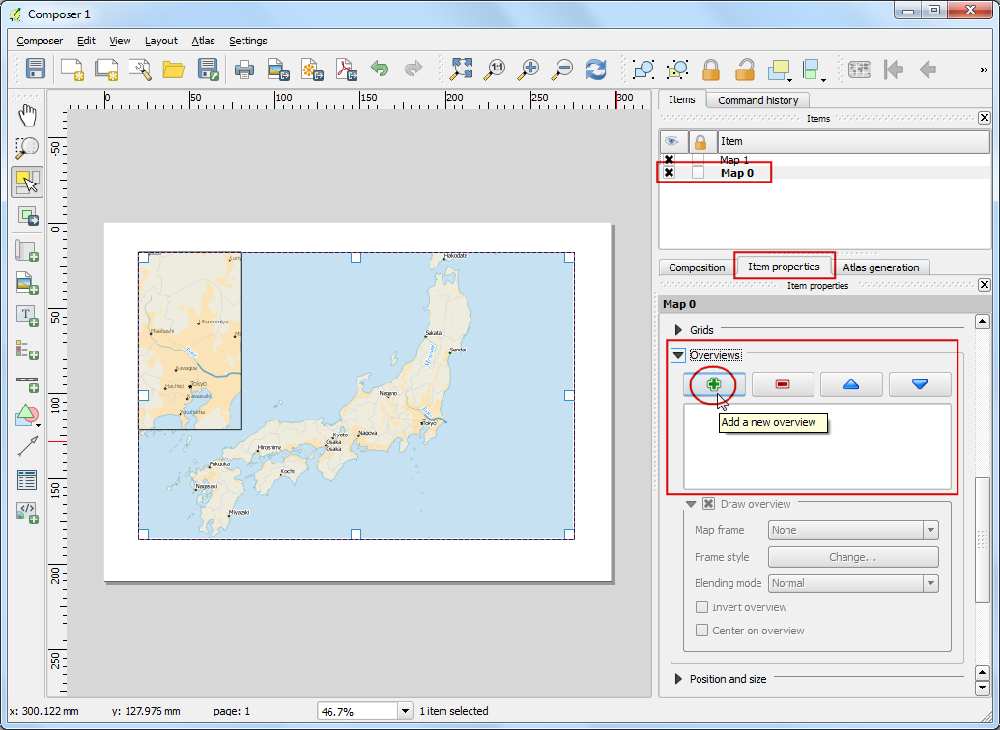
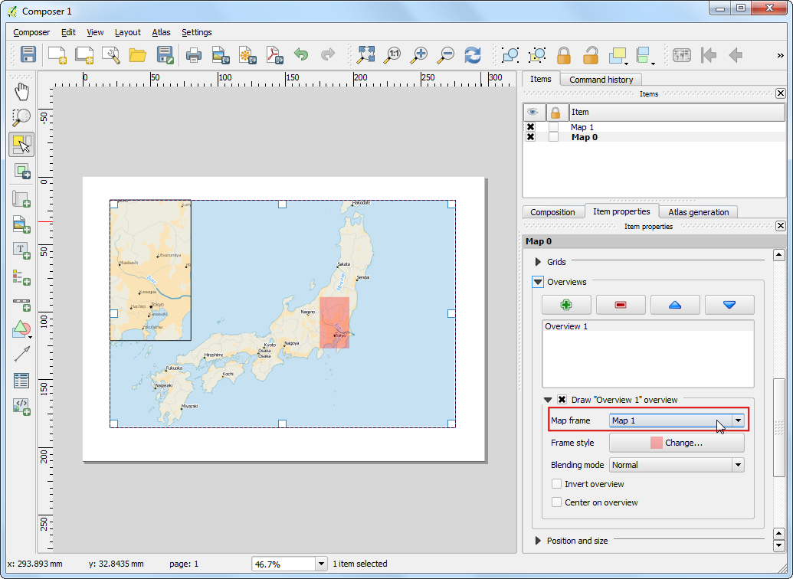

การสร้างแผนที่
[ Download PDF A4
Letter ]
มีบ่อยครั้งที่ต้องการสร้างแผนที่เพื่อพิมพ์หรือเผยแพร่ QGIS มีเครื่องมือที่เรียกว่า Print Composer ซึ่งทำให้คุณสามารถสร้างแผนที่ ที่มีชั้นข้อมูลต่างๆ หลายๆ ชั้น ของแผนที่ได้
ภาพรวมของงาน
ในหน้านี้จะแสดงการสร้างแผนที่ประเทศญี่ปุ่น โดยใช้องค์ประกอบพื้นฐานของแผนที่ เช่น แผนที่ขนาดเล็ก, เส้นกริด, ลูกศรแสดงทิศเหนือ, แท่งสเกล และ ป้ายชื่อ
สิ่งอื่นๆ ที่คุณจะได้เรียนรู้
ข้อมูลที่ต้องใช้
ในที่นี้จะใช้ชุดข้อมูล Natural Earth จาก Natural Earth Quick Start Kit ซึ่งมาพร้อมกับชั้นข้อมูลต่างๆ ที่สวยงานซึ่งสามารถโหลดเข้า QGIS ได้โดยตรง
ดาวน์โหลด Natural Earth Quickstart Kit
แหล่งข้อมูล [NATURALEARTH]
ขั้นตอนวิธี
ดาวน์โหลดและแตกข้อมูล Natural Earth Quick Start Kit เปิด QGIS คลิกที่

เลือกไปไดเรกทอรี่ที่คุณแตกไฟล์ natural earth data ไว้ คุณควรจะเห็นไฟล์ชื่อ Natural_Earth_quick_start_for_QGIS.qgs ไฟล์นี้เป็นไฟล์โปรเจคซึ่งประกอบไปด้วยชั้นข้อมูลที่เก็บในรูปแบบเอกสารของ QGIS คลิก Open

คุณจะเห็นชั้นข้อมูลมากมายรวมไปถึงแผนที่โลกในหน้าโปรแกรม QGIS หากคุณเห็นข้อความข้อผิดพลาดด้านบน คลิกที่เครื่องหมายกากบาทเพื่อปิด

ในเอกสารนี้ เราจะสร้างแผนที่ของประเทศญี่ปุ่น คลิกที่ปุ่ม Zoom In และวาดสี่เหลี่ยมรอบประเทศญี่ปุ่นเพื่อขยายเข้าไปยังพื้นที่

คุณสามารถปิดบางชั้นข้อมูลที่ไม่ต้องการแสดงในแผนที่ได้ ตอนนี้ให้ติ๊กออกจากกล่องถัดจากชั้นข้อมูล 10m_geography_marine_polys และ 10m_admin_0_map_units แต่ก่อนจะสร้างการพิมพ์ที่เหมาะสม เราต้องเลือก projection ที่ถูกต้องเสียก่อน ชุดข้อมูลนี้มาในรูปแบบ Geographic Coordinate System (GCS) หน่วยวัดที่ใช้จะเป็นองศา ซึ่งจะไม่เหมาะสมสำหรับแผนที่ของคุณที่ต้องการระยะทางเป็นกิโลเมตรหรือไมล์ เราต้องใช้ Projected Coordinate System ซึ่งมีความบิดเบือนน้อยสำหรับพื้นที่ๆ สนใจ และมีหน่วยเป็นเมตร ซึ่ง Universal Transverse Mercator (UTM) เป็นตัวเลือกแรกที่ดีและคุณสามารถใช้ UTM ได้ทั่วไป ในกรณีนี้เราจะใช้ UTM Zone 54N โดยคลิกเลือกที่ CRS Status ที่ด้านล่างขวาของหน้าต่าง QGIS
Note
สำหรับประเทศญี่ปุ่น จะใช้ Japan Plane Rectangular CS เป็น projected coordinate reference system (CRS) ซึ่งถูกออกแบบมาให้มีความบิดเบือนน้อยที่สุด ระบบนี้จะแบ่งพื้นที่ออกเป็น 18 โซน ซึ่งถ้าคุณทำงานกับพื้นที่ขนาดเล็กในประเทศญี่ปุ่น การใช้ CRS นี้จะดีกว่า

ติ๊กเลือกที่กล่อง Enable on-the-fly CRS Transformation และพิมพ์ป้อน Tokyo utm zone54n ลงในกล่อง Filter เมื่อคุณเห็นผลลัพธ์จากการป้อนแล้ว ให้เลือก Tokyo / UTM Zone 54N - EPSG:3095 จากนั้นคลิกที่ Apply

ขณะนี้พร้อมที่จะประกอบร่างแผนที่แล้ว เริ่มโดย ไปที่เมนู

จะมีหน้าต่างมาให้คุณกรอกชื่อของ composer ซึ่งคุณไม่จำเป็นต้องใส่ก็ได้ โดยคลิกที่ปุ่ม Ok ได้เลย
Note
การที่เราไม่ได้ตังชื่อให้ composer โปรแกรมจะตั้งชื่อให้เราในรูปแบบเช่น Composer 1

ในหน้าต่าง Print Composer ให้คลิกที่ปุ่ม Zoom full เพื่อแสดงผลแบบพอดีหน้าต่างทำงาน จากนั้นเราก็จะสามารถเอาแผนที่จากหน้า QGIS มาแสดงผลที่หน้านี้ได้ โดยเลือกที่เมนู

เมื่อปุ่ม Add Map ทำงาน ให้คลิกปุ่มเมาส์ซ้ายค้างและลากเพื่อวาดแผนที่ลงในตำแหน่งที่ต้องการ

ตรงนี้คุณจะเห็นว่าในกรอบสี่เหลี่ยมที่เพิ่งวาดลงไปจะปรากฏแผนที่จาก QGIS แต่จะเห็นได้ว่าจุดที่เราสนใจจะเห็นไม่หมด แก้ไขด้วยการเลือกเมนู คุณจะเห็นแผนที่ที่คุณสนใจอยู่ตรงกลางของหน้า composer

ปรับระดับการซูมให้กับแผนที่ โดยคลิกที่แท็บ Item Properties จากนั้นป้อนค่า 7000000 ลงในช่อง Scale

ต่อไปเราจะเพิ่ม map inset ซึ่งจะแสดงส่วนที่ขยายไปที่พื้น Tokyo แต่ที่จะไปปรับแต่งค่าในหน้าต่าง QGIS ให้ติ๊กเลือกที่ช่อง Lock layers for map item และ Lock layer styles for map item เพื่อให้แน่ใจว่าถ้าเราปิดบางชั้นข้อมูลหรือเปลี่ยนรูปแบบไป จะไม่ส่งผลกับหน้านี้

สลับกลับมาที่หน้าต่างหลักของ QGIS ใช้ปุ่ม Zoom In เพื่อซูมเข้าไปยังพื้นที่รอบๆ Tokyo

คุณจะเห็นชั้นของข้อมูลที่ซ้ำกันจาก ne_10m_populated_places ซึ่งคุณสามารถปิดได้

ตอนนี้พร้อมแล้วที่จะเพิ่ม map inset ให้สลับไปที่หน้าต่าง Print Composer เลือกเมนู

ลากเพื่อวาดกรอบ map inset ลงไปยังพื้นที่ที่ต้องการ ตอนนี้คุณจะสังเกตได้ว่า เรามีวัตถุประเภทแผนที่อยู่ 2 อัน ในหน้า Print Composer ก่อนจะแก้ไขต้องให้แน่ใจว่ากำลังแก้ไขถูกแผนที่ ตอนนี้ให้เลือกวัตถุ Map 1 ที่เราเพิ่มเข้ามาก่อนหน้านี้จาก Items จากนั้น เลือกแท็บ Item properties เลื่อนลงมาเจอ Frame แล้วติ๊กเพื่อเลือก ตรงนี้คุณสามารถเปลี่ยนสีและความหนาของเส้นขอบเพื่อให้สังเกตเห็นได้อย่างง่ายๆ และชัดเจน

หนึ่งในความสามารถเจ๋งๆ ของ Print Composer คือ ความสามารถในการไฮไลท์พื้นที่จากแผนที่หลักลงใน inset ให้แบบอัตโนมัติ โดยเลือกที่วัตถุ Map 0 จาก Items จากนั้น ในแท็บ Item properties เลื่อนลงมาที่ส่วน Overviews คลิกที่ปุ่ม Add a new overview

เลือก Map 1 เป็น Map Frame ซึ่งเป็นการบอกให้ Print Composer ทำไฮไลท์วัตถุ Map 0 ของเรา ด้วยขอบเขตที่ปรากฏในวัตถุ Map 1

ตอนนี้เราได้ map inset แล้ว ต่อไปเราจะเพิ่มเส้นกริดและเส้นขอบม้าลายลงในแผนที่หลัก ตอนนี้ให้เลือกวัตถุ Map 0 จากแถบ Items ในแท็บ Item properties เลื่อนลงมาที่ส่วน Grids จากนั้นคลิกที่ปุ่ม Add a new grid

โดยปกติ เส้นกริดจะใช้หน่วยและ projection เช่นเดียวกับแผนที่ที่เลือกอยู่ อย่างไรก็ตาม เส้นกริดที่ใช้หน่วยองศาจะใช้กันทั่วไปและมีประโยชน์มากกว่า ซึ่งเราสามารถเลือก CRS อื่นสำหรับเส้นกริดได้ โดยเลือกที่ change... ถัดจาก CRS

ในหน้าต่าง Coordinate Reference System Selector ให้ป้อน 4326 ลงในช่อง Filter จากผลลัพธ์ที่ได้ ให้เลือก WGS84 EPSG:4326 เป็น CRS จากนั้นคลิก OK

ตั้งค่า Interval ให้เป็น 5 องศา ทั้งใน X และ Y คุณสามารถปรับ Offset เพื่อเปลี่ยนการแสดงผลของเส้นกริดได้เช่นกัน

เลื่อนลงมาที่ส่วน Grid frame และเลือกรูปแบบของกรอบตามรสนิยมของคุณและติ๊กเลือกที่กล่อง Draw coordinates

ตั้งค่า Distance to map frame จนกระทั่งค่าพิกัดแสดงผลออกมาสวยงาม จากนั้น เปลี่ยน Coordinate precision เป็น 1 ซึ่งจะทำให้ค่าพิกัดแสดงผลออกมาเป็นเลขทศนิยม 1 ตำแหน่งเท่านั้น

ตอนนี้เราจะทำการเพิ่มลูกศรทิศเหนือลงบนแผนที่ ซึ่ง Print Composer มาพร้อมกับชุดของรูปภาพที่เกี่ยวข้องกับการทำแผนที่อยู่พอสมควร รวมไปถึงรูปแบบของลูกศรทิศเหนือด้วย สามารถเพิ่มโดย คลิกที่เมนู

คลิกเมาส์ปุ่มซ้ายค้างไว้และวาดสี่เหลี่มลงบนตำแหน่งมุม บน-ขวา ของแผน บนแผงทางด้านขวา คลิกเลือกที่แท็บ Item Properties และขยายส่วน Search directories ให้ปรากฏออกมา จากนั้น เลือกรูปลูกศรทิศเหนือที่คุณต้องการ

ตอนนี้เราจะทำการเพิ่ม scale bar โดยคลิกที่เมนู

คลิกลงบนส่วนที่ต้องการให้มี scalebar ปรากฏ ในแท็บ Item Properties ตรวจดูให้แน่ใจว่าคุณเลือกองค์ประกอบแผนที่ที่ต้องการแสดง scalebar ที่ต้องการ จากนั้น ปรับแต่งรูปแบบตามที่คุณต้องการ ใน Segments คุณสามารถปรับ segment ของขนาดได้เช่นกัน

ต่อไปเป็นการเพิ่ม label ลงบนแผนที่ โดยคลิกที่เมนู

วาดกล่องสี่เหลี่ยมลงบนแผนที่ ในจุดที่ต้องการจะให้มี label ในแท็บ Item Properties คลิกเพื่อขยายที่ส่วน Label เพื่อให้ช่องกรอกข้อความปรากฏขึ้น จากนั้นเราจะสามารถป้อนข้อความที่เป็น HTML ลงไป และติ๊กเลือกที่ช่อง Render as Html เพื่อให้สามารถใช้แท็ก HTML ได้
<div align=center>
<h1>Map of Japan</h1>
</div>

ทำเช่นเดียวกันกับด้านบน สามารถเพิ่มข้อมูลหรือเครดิตอื่นๆ เพิ่มได้

เมื่อคุณปรับแต่งแผนที่ตามที่ต้องการแล้ว คุณสามารถบันทึกแผนที่ออกมาเป็นไฟล์ที่ต้องการได้ เช่น รูปภาพ, PDF หรือ SVG ในที่นี้ จะบันทึกเป็นไฟล์รูปภาพ โดย คลิกที่

บันทึกไฟล์รูปภาพในฟอร์แมตที่คุณต้องการ เช่น ด้านล่างนี้บันทึกเป็นไฟล์ PNG